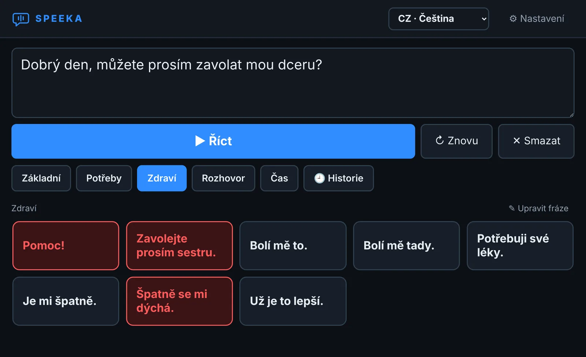

Speeka mluví za vás.
Napíšete, co chcete říct, nebo klepnete na připravenou frázi. Speeka to řekne přirozeným hlasem, česky, anglicky a v dalších osmi jazycích. Bez internetu, bez účtu a zdarma.

Pro koho je Speeka
Pro každého, kdo umí psát, ale nemůže mluvit, ať už natrvalo, nebo jen na čas: po operaci hrtanu, po mrtvici, s ALS, při ztrátě hlasu nebo v zahraniční nemocnici, kde vám nikdo nerozumí. A pro blízké, pečovatele a logopedy, kteří chtějí vrátit hlas do rozhovoru.
Co umí
Přirozený hlas
Neuronový hlas Supertonic, který zní jako člověk, ne jako robot. Stejný hlas ve všech jazycích.
Připravené fráze
Ano, ne, děkuji, mám žízeň, zavolejte sestru… Skupiny frází si upravíte podle sebe.
Deset jazyků
Čeština, angličtina, slovenština, polština, němčina, španělština, francouzština, italština, ukrajinština a ruština. Pod frází může být i překlad do vašeho jazyka, ať víte, co říkáte.
Slyšet i v hluku
Hlasitost až 200 % s ochranou proti přebuzení, vyrovnání hlasitosti a zvýraznění pro nedoslýchavé.
Historie
Co jste řekli, zůstane po ruce. Jedním klepnutím to zopakujete.
Zámek pro pečovatele
Nastavení a úpravy frází lze zamknout jednoduchým příkladem, aby se nic nezměnilo omylem.
Velké a čitelné
Tři velikosti písma, tmavý i světlý vzhled s vysokým kontrastem, velká tlačítka.
Nic neodchází ze zařízení
Speeka běží celá offline. Žádný účet, žádný cloud, žádné sledování. Co napíšete, zůstane jen u vás.
Kde Speeka běží
Windows
Windows 10 a 11 (64bit). Z Microsoft Store, nebo jako přenosná verze bez instalace.
Android
Android 7.0 a novější, 64bit telefony a tablety. Teď se ladí, na Google Play bude brzy.
iPhone a iPad
Přemýšlíme o tom. Jestli a kdy, to zatím neví nikdo.
Jak začít
Nainstalujte Speeku
Nejjednodušší je Microsoft Store: instalace jedním kliknutím a aktualizace přijdou samy. Speeku pak najdete v nabídce Start.
Nebo bez instalace
Přenosnou verzi stáhnete jako ZIP. Je větší, protože obsahuje i hlas. Pravým tlačítkem na soubor → Extrahovat vše a spusťte Vox.exe. Složku můžete dát kamkoli, třeba na flashdisk.
Řekněte první větu
Napište ji do pole nahoře a zmáčkněte Enter.
U přenosné verze může Windows při prvním spuštění ukázat hlášku „Systém Windows ochránil váš počítač“. Přenosná verze zatím nemá placený digitální podpis (verze z Microsoft Store tuto hlášku nemá). Klikněte na Další informace a pak na Přesto spustit.